基礎題
行車使用手機是明顯而非立即的危險，此類危險最容易被忽視。當駕駛人撥打手機時，按一個按鍵約需時 0.6 秒，假設此時車輛以時速 90 公里行駛，那麼在按一個按鍵的時間內，汽車行駛了多少公尺？
- (A) 15
- (B) 30
- (C) 60
- (D) 90
看答案與詳解
答案：(A)
行駛距離＝速率×時間＝25×0.6＝15 m → (A)。
〔易錯〕直接用 90×0.6＝54 是單位沒換（km/h 不能直接乘秒）。
可慧使用網路上的電子地圖來規劃行程，當她輸入起點與終點後，電子地圖提供了步行（圖中虛線）與開車（圖中實線）兩種路線規劃，如圖所示。下列有關此兩種路線規劃的敘述，何者正確？
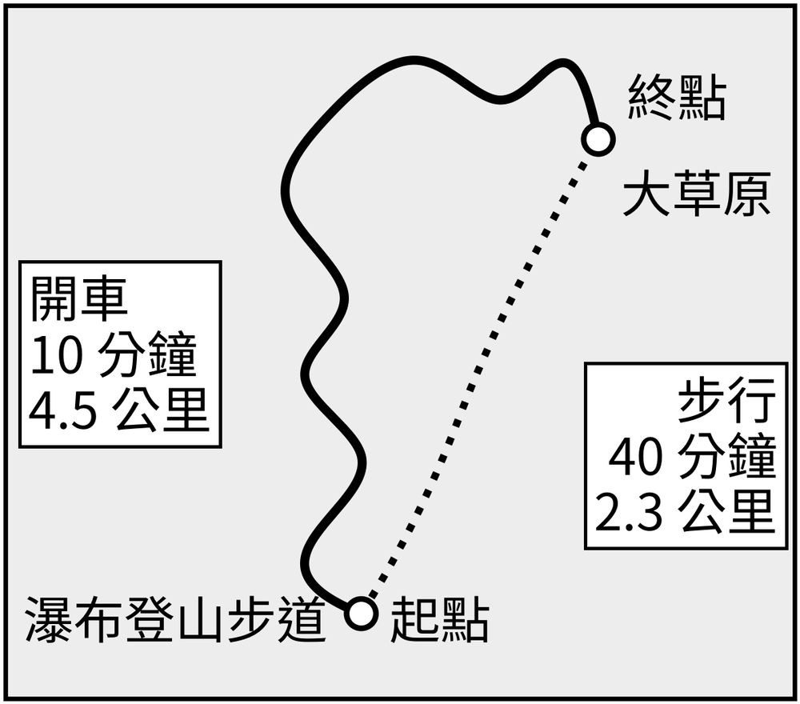
- (A) 位移相同
- (B) 路徑長相同
- (C) 平均速度相同
- (D) 平均速率相同
看答案與詳解
答案：(A)
(B) ✘ 步行 2.3 公里，開車 4.5 公里，路徑長不同。
(C) ✘ 位移相同但時間不同（40 分鐘與 10 分鐘），平均速度不同。
(D) ✘ 步行 2.3÷(40/60)≒3.5 km/h，開車 4.5÷(10/60)＝27 km/h，平均速率不同。
棒球比賽中，小夫站在二壘壘包上、大雄站在本壘的打擊區，如圖(八)所示。當投手投出球後，大雄揮棒將球擊出，球在外野落地，此時小夫經三壘跑回本壘得分，大雄經過一壘後停在二壘壘包上，如圖(九)所示。已知本壘、一壘、二壘和三壘連線後可形成一個四邊等長的四邊形，且兩人的跑壘路線皆是沿著此四邊形的邊，則關於「小夫從二壘→三壘→本壘」和「大雄從本壘→一壘→二壘」的位移與路徑長，下列比較何者正確？
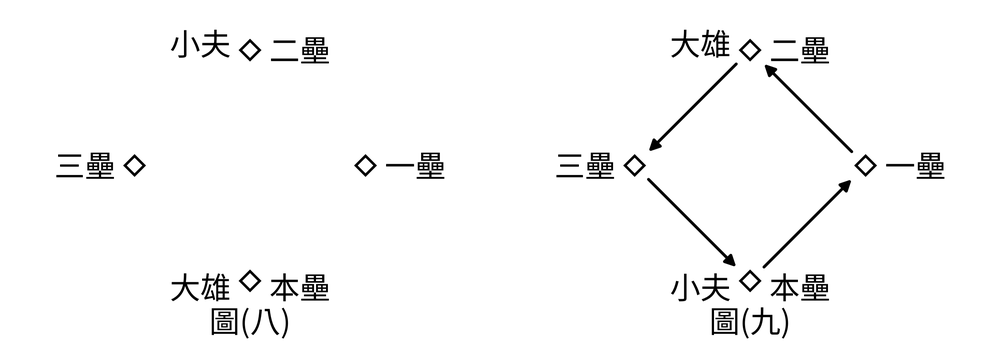
- (A) 兩人的位移不同，但路徑長相同
- (B) 兩人的位移相同，但路徑長不同
- (C) 兩人的位移與路徑長均不同
- (D) 兩人的位移與路徑長均相同
看答案與詳解
答案：(A)
路徑長：小夫 L＋L＝2L，大雄 L＋L＝2L → 相同。
位移：小夫由二壘指向本壘，大雄由本壘指向二壘，大小相同但方向相反 → 位移不同。
故選 (A)。
〔易錯〕位移大小相同不代表位移相同，方向也要相同。
如圖為各種運動的分類，老師請志豪將「等速度運動」的圖卡貼在圖中甲、乙、丙、丁中的一個位置上，則他貼在哪一個位置才是正確的判斷？
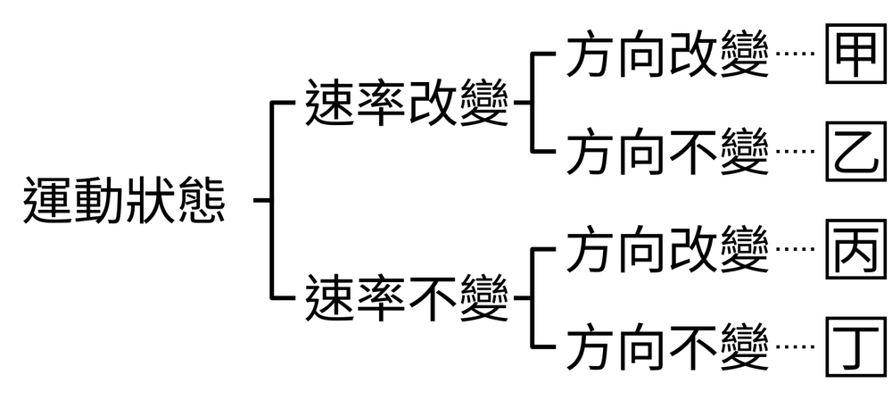
- (A) 甲
- (B) 乙
- (C) 丙
- (D) 丁
看答案與詳解
答案：(D)
乙是速率改變、方向不變（直線加速或減速）；丙是速率不變、方向改變（如等速率圓周運動）。
不計空氣阻力，小明將一石頭向空中拋出，其飛行路線如圖所示，在 a、b、c 三點（a、c 高度相同），則下列敘述何者正確？
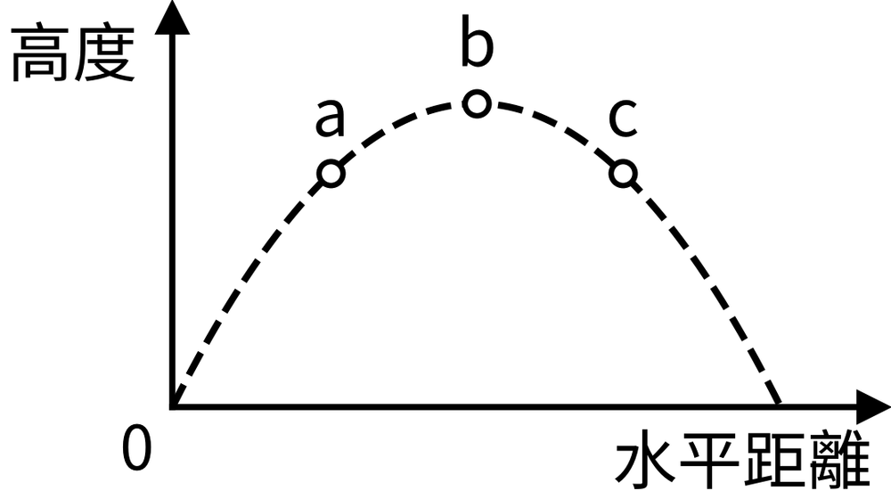
- (A) 自出發點到 a、c 兩點位移相等
- (B) a、c 兩點速度相等
- (C) 三點的加速度值相等
- (D) b 點速度為零
看答案與詳解
答案：(C)
(B) ✘ a 點斜向上運動、c 點斜向下運動，方向不同，速度不相等（速率相等）。
(C) ✔ 拋出後只受重力，各點加速度都是 g（向下）。
(D) ✘ b 點只是鉛直方向速度為 0，仍有水平速度。
一輛汽車行駛於筆直的道路上，在 t＝0 s 時開始由靜止出發，t＝10 s 時汽車的速度大小為 20 m/s，已知汽車在 t＝10～20 s 期間所受合力為 0，則 t＝20 s 時，汽車的速度大小應為多少？
- (A) 0
- (B) 10 m/s
- (C) 20 m/s
- (D) 40 m/s
看答案與詳解
答案：(C)
t＝10 s 時為 20 m/s，到 t＝20 s 仍為 20 m/s → (C)。
〔易錯〕合力為 0 不是停下來，而是維持原來的速度。
麗華將一個 0.5 公斤的鐵球由高樓頂處自由落下，經過 4 秒後鐵球落至地面，接著又將一塊 400 公克的木塊由同一處自由落下，若皆不考慮空氣阻力，則經過多少秒後木塊會落至地面？（重力加速度＝9.8 公尺／秒2）
- (A) 4
- (B) 5
- (C) 16
- (D) 32
看答案與詳解
答案：(A)
由同一高度落下 → 落地時間相同＝4 秒 → (A)。
小花在實驗室中找到一份舊實驗紀錄簿，紀錄簿中有一頁單擺實驗的紀錄表，此表因蟲蛀而使部分資料無法判讀，如圖(十三)所示。若製作此表時的實驗步驟正確且結果合理，則由可辨識的資料來判斷，下列何者最可能為組別丙的擺長長度？
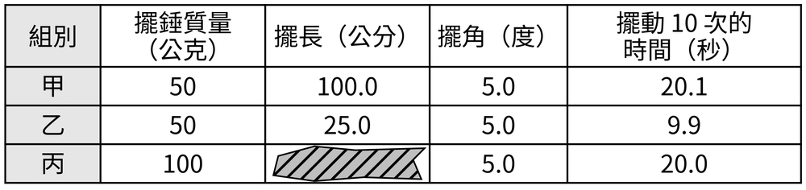
- (A) 25.0 公分
- (B) 50.0 公分
- (C) 100.0 公分
- (D) 200.0 公分
看答案與詳解
答案：(C)
甲：擺長 100.0 公分，擺動 10 次 20.1 秒；丙：擺動 10 次 20.0 秒，週期與甲幾乎相同 → 擺長也約 100.0 公分 → (C)。
乙擺長 25.0 公分只需 9.9 秒，可見擺長越短週期越短；丙的擺錘質量雖較大，但不影響週期。
若戰鬥機起飛速度是 360 km/h，某戰鬥機由靜止以 25 m/s2 等加速度加速，則跑道至少要多長才可順利起飛而不會衝出跑道？
- (A) 100 m
- (B) 200 m
- (C) 300 m
- (D) 400 m
看答案與詳解
答案：(B)
加速時間 t＝100÷25＝4 s。
跑道長＝v-t 圖三角形面積＝½×4×100＝200 m → (B)。
（或用 v2＝2aS：1002＝2×25×S → S＝200 m）
進階題
一滑車作直線運動，在時間 t＝0 s 時的速度為 5 m/s，方向向東；t＝5 s 時的速度為 10 m/s，方向向西，則此滑車在 t＝0～5 s 期間的平均加速度為下列何者？
- (A) 1 m/s2，方向向東
- (B) 1 m/s2，方向向西
- (C) 3 m/s2，方向向東
- (D) 3 m/s2，方向向西
看答案與詳解
答案：(D)
Δv＝(−10)−(＋5)＝−15 m/s；a＝−15÷5＝−3 m/s2。
負號表示向西 → 3 m/s2，方向向西 → (D)。
〔易錯〕用 10−5＝5 算出 1 m/s2，忽略了速度方向相反。
小杉為了鍛鍊身體，每天由家裡跑到離家 10 公里的鄉村後再返回家中，每天跑了 20 公里，已知去程的速率 8 km/h，回程速率 12 km/h，則下列敘述何者正確？
- (A) 小杉平均速率 10 km/h
- (B) 小杉平均速度 10 km/h
- (C) 小杉平均速率 0 km/h
- (D) 小杉平均速度 0 km/h
看答案與詳解
答案：(D)
平均速率＝總路徑長÷總時間：去程 10÷8＝1.25 h，回程 10÷12≒0.83 h，共 25/12 h。
平均速率＝20÷(25/12)＝9.6 km/h → (A)(C) ✘。
〔易錯〕平均速率不是 (8＋12)÷2＝10，要用總路程÷總時間。
如附圖所示，圖上 X 點到 Y 點有 S1、S2 兩條路徑可以選擇，小志與阿耀同時由 X 點出發向 Y 點移動，且途中無折返，抵達 Y 點後計算出兩人的平均速度大小與平均速率，如附表所示。有關誰先抵達 Y 點及他們選擇的路徑，下列敘述何者正確？
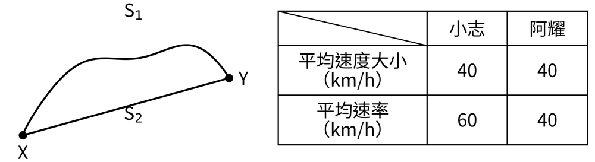
- (A) 小志先抵達，且兩人選擇相同的路徑
- (B) 阿耀先抵達，且兩人選擇不同的路徑
- (C) 兩人同時抵達，且兩人選擇相同的路徑
- (D) 兩人同時抵達，且兩人選擇不同的路徑
看答案與詳解
答案：(D)
② 阿耀：平均速率＝平均速度大小 → 路徑長＝位移大小 → 走直線 S2。
③ 小志：平均速率 60＞40 → 路徑長＞位移大小 → 走彎曲的 S1。
兩人同時抵達、路徑不同 → (D)。
丁丁利用空餘時間進行慢跑，圖(二)為他沿一直線運動時的位置 (x) 與時間 (t) 的關係圖，若以直線座標的＋x 軸方向為正，下列哪一時段表示慢跑時的速度為正？
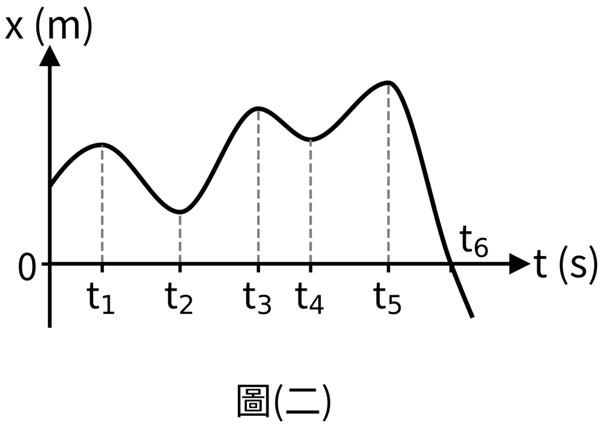
- (A) t1～t2
- (B) t2～t3
- (C) t3～t4
- (D) t5～t6
看答案與詳解
答案：(B)
(A) t1～t2：x 減少，速度為負 ✘。
(B) t2～t3：x 增加，速度為正 ✔。
(C) t3～t4：x 減少 ✘。
(D) t5～t6：x 急速減少 ✘。
〔易錯〕x＞0 不代表速度＞0，要看斜率。
在直線道路上有甲、乙兩輛車，圖(二十二)為兩車的位置對時間關係圖，若 F甲 和 F乙 分別代表兩車所受合力，下列關於 F甲 和 F乙 的判斷何者正確？
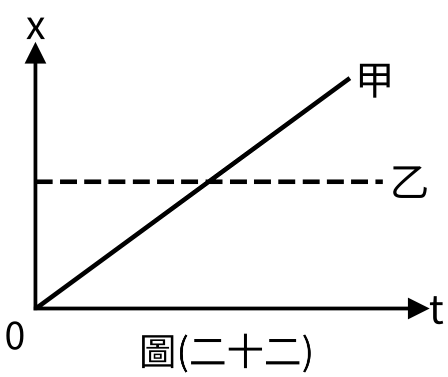
- (A) F甲＝0，F乙≠0
- (B) F甲≠0，F乙＝0
- (C) F甲≠0，F乙≠0
- (D) F甲＝0，F乙＝0
看答案與詳解
答案：(D)
乙：x-t 圖為水平線 → 靜止 → 合力 0。
故 F甲＝0，F乙＝0 → (D)。
〔易錯〕甲在動不代表有合力；等速度運動的合力為 0。
一部汽車在南北向的水平道路上行駛，其速度與時間的關係如圖所示。若計時開始時，汽車朝北方前進，下列敘述何者正確？
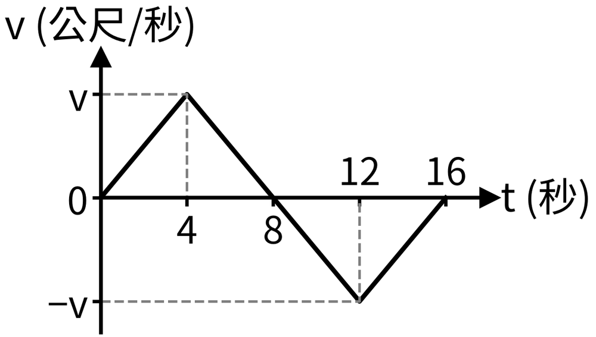
- (A) 計時的全程，汽車做等加速度運動
- (B) 在 5 秒時，汽車的運動方向為向南方
- (C) 在 8 秒時，汽車回到出發點
- (D) 在計時的 16 秒內，汽車的平均速度為零
看答案與詳解
答案：(D)
(A) ✘ 斜率（加速度）在 4 s、12 s 時改變正負，不是等加速度。
(B) ✘ 0～8 s 速度都為正 → 5 秒時仍向北。
(C) ✘ 0～8 s 一直向北，8 秒時離出發點最遠。
(D) ✔ 0～8 s 面積（向北）與 8～16 s 面積（向南）大小相等 → 16 s 內總位移 0 → 平均速度 0。
在筆直的道路上有甲、乙、丙、丁四輛車，圖(十四)為四車的速度 (v) 與時間 (t) 關係圖。若 t＝0 s 時，四車位於同一位置，則有關 t＞0 s 車輛間距離的敘述，下列何者正確？
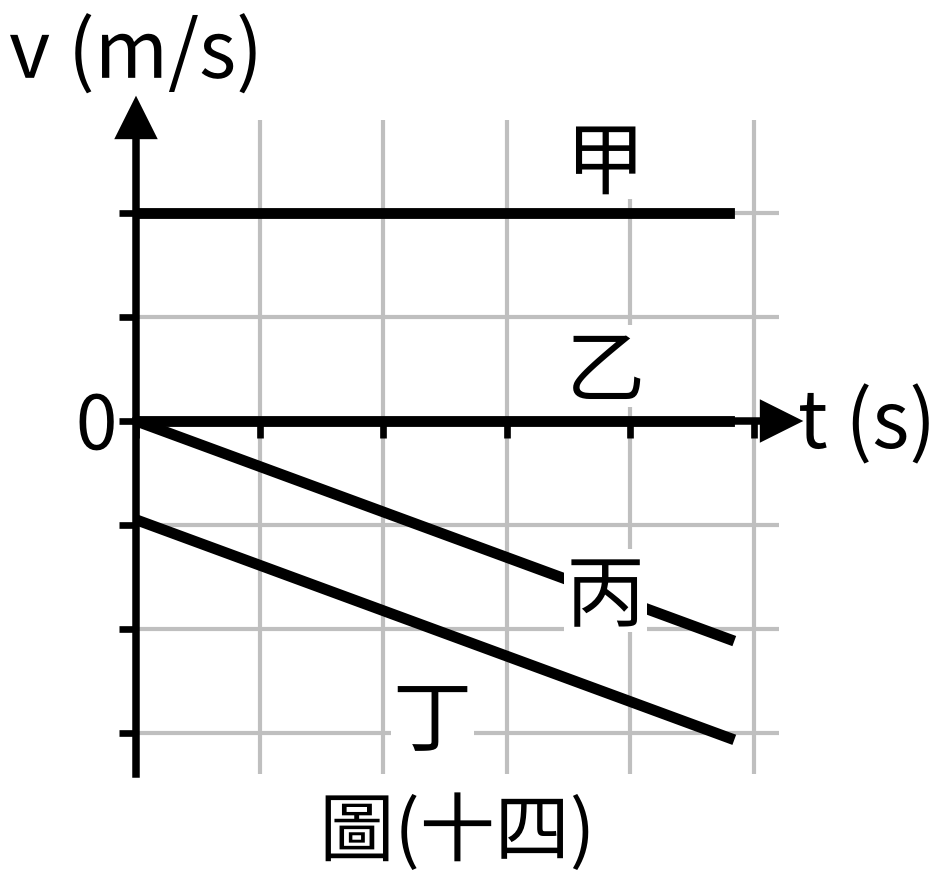
- (A) 甲、乙兩車的距離保持不變
- (B) 丙、丁兩車的距離保持不變
- (C) 甲、丙兩車的距離愈來愈近
- (D) 乙、丁兩車的距離愈來愈遠
看答案與詳解
答案：(D)
(A) ✘ 甲前進、乙不動 → 距離越來越大。
(B) ✘ 丁的速度一直比丙更負（往負方向更快）→ 兩車距離越來越大。
(C) ✘ 甲往正方向、丙往負方向 → 越來越遠。
(D) ✔ 乙不動，丁往負方向越跑越快 → 越來越遠。
小夫、胖虎、大雄和靜香四人分別在直線跑道上運動，並將位置與時間關係記錄後繪製出圖(三十)的 x-t 圖，及圖(三十一)的 v-t 圖，關於圖形中甲、乙、丙、丁四點的意義判讀，下列敘述何者正確？
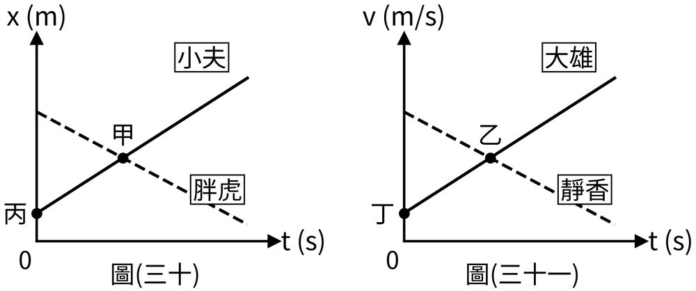
- (A) 圖(三十)中甲點：小夫和胖虎此時相遇
- (B) 圖(三十一)中乙點：大雄和靜香此時加速度相等
- (C) 圖(三十)中丙點：小夫的初速度
- (D) 圖(三十一)中丁點：大雄的出發位置
看答案與詳解
答案：(A)
(B) ✘ v-t 圖的交點表示速度相等；加速度是斜率，兩線斜率一正一負，不相等。
(C) ✘ x-t 圖縱軸截距是 t＝0 的位置（出發位置），不是初速度。
(D) ✘ v-t 圖縱軸截距是初速度，不是出發位置。
大佳操控遙控車作直線運動，車子位置 (x) 對時間 (t) 的關係如表所示。下列哪一個圖形可描述他在 0～5 s 期間的運動狀態？
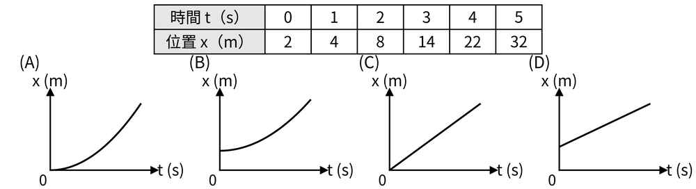
看答案與詳解
答案：(B)
t＝0 時 x＝2 m，不在原點 → 圖線不通過原點 → (B)。
甲、乙兩選手參加 100 公尺直線賽跑時，前 14 秒的速度－時間關係如右圖所示，根據圖形，甲、乙兩人誰先抵達終點？
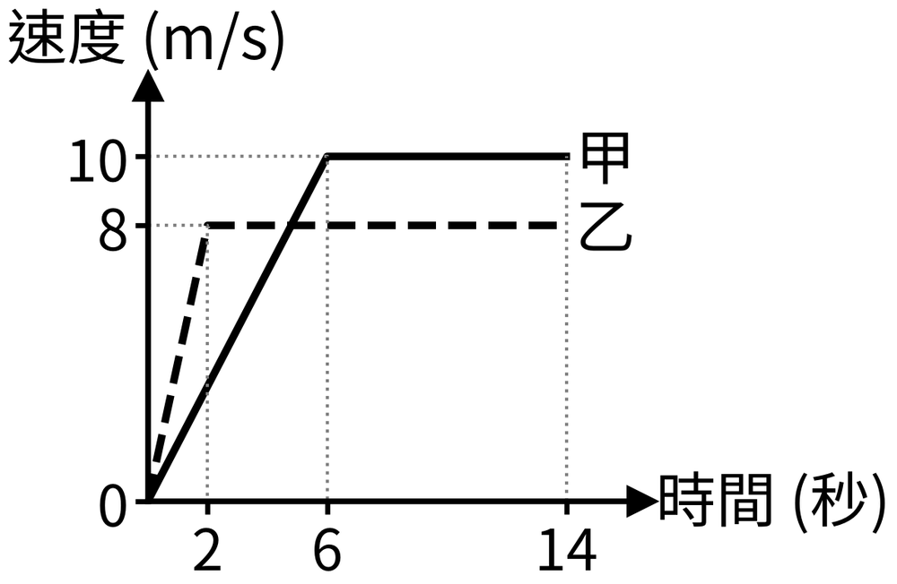
- (A) 甲
- (B) 乙
- (C) 同時抵達
- (D) 都還沒到達
看答案與詳解
答案：(A)
甲：0～6 s 面積＝½×6×10＝30 m，之後每秒 10 m，剩 70 m 需 7 s → 第 13 s 到終點。
乙：0～2 s 面積＝½×2×8＝8 m，之後每秒 8 m，剩 92 m 需 11.5 s → 第 13.5 s 到終點。
甲較早抵達 → (A)。
會考／素養題
400 米賽跑的距離剛好是室外標準跑道最內圈一圈的長度，比賽中選手需跑在自己的跑道上，因內、外圈跑道長度的差異，不同跑道的選手起跑位置需作對應調整，如圖(八)所示。在這項比賽中最先跑完 400 米的選手，他在比賽過程哪一項物理量的大小必高於其他所有選手？
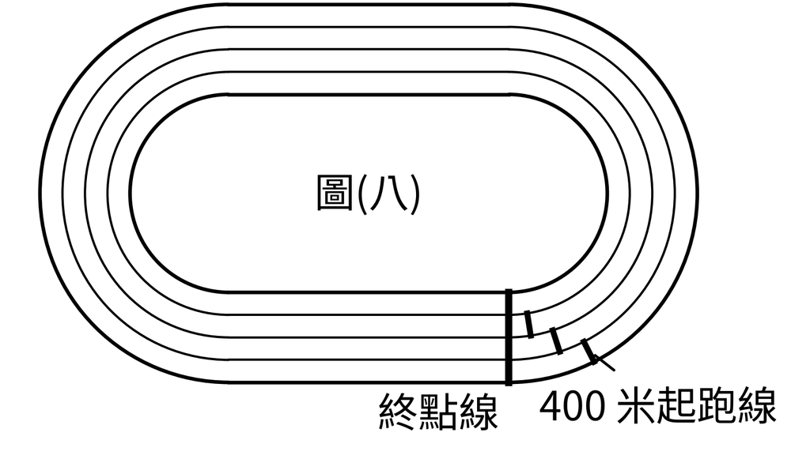
- (A) 平均速率
- (B) 平均速度
- (C) 過程中速率的最大值
- (D) 過程中速度的最大值
看答案與詳解
答案：(A)
(A) ✔ 最先跑完 → 時間最短 → 平均速率＝400 m÷時間 最大。
(B) ✘ 各跑道起跑點不同、終點線相同，位移各不相同（最內圈跑一整圈位移為 0），平均速度不一定最大。
(C)(D) ✘ 平均最快不代表瞬間最快，別的選手可能某一瞬間跑得更快。
甲、乙、丙三地位於同一條筆直的道路上，且乙地位於甲、丙之間，甲、乙二地的距離為 S1，乙、丙二地的距離為 S2。小明沿著道路由甲地出發經乙地到達丙地後再折返回乙地，其路線即甲→乙→丙→乙，已知此過程小明的平均速度大小為每小時 3 公里，平均速率為每小時 15 公里，則 S1：S2 為下列何者？
- (A) 1：1
- (B) 1：2
- (C) 1：4
- (D) 1：5
看答案與詳解
答案：(B)
時間相同 → 平均速度大小：平均速率＝位移：路徑長＝3：15＝1：5。
S1：(S1＋2S2)＝1：5 → S1＋2S2＝5S1 → 2S2＝4S1 → S1：S2＝1：2 → (B)。
農夫現在大多都使用割稻機取代人力收割稻子，省時又省力。現在有一部割稻機由稻田的 A 點以 S 形方式（如圖(十五)中虛線路徑）沿途收割，共來回 15 趟（由 AB 邊線出發到 CD 邊線，再返回到 AB 邊線為一趟），最後抵達 B 點，總共花了 1 小時。稻田為邊長 60 m 的正方形，割稻機的大小相對稻田可視為一質點，則此割稻機整個收割過程的平均速率約多少 m/s？
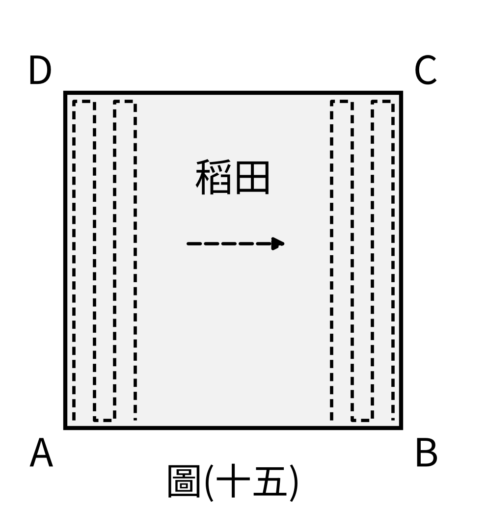
- (A) 31／60
- (B) 1／60
- (C) 1／30
- (D) 1／2
看答案與詳解
答案：(A)
總路徑長＝1800＋60＝1860 m；時間 1 小時＝3600 s。
平均速率＝1860÷3600＝31／60 m/s → (A)。
〔易錯〕平均速度只看 A 到 B 的位移 60 m（＝1／60 m/s），不是平均速率。
小瑜利用相同頻率的「連續攝影」記錄甲、乙、丙三個圓球由右向左直線滾動的過程，結果如圖(三十二)所示，下列敘述何者錯誤？
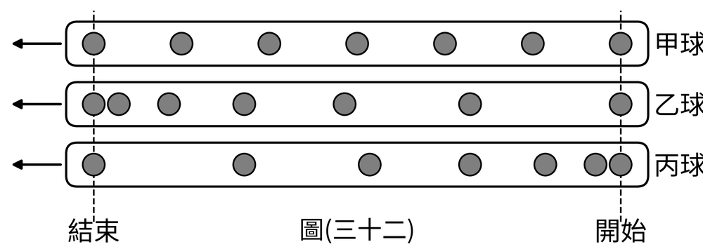
- (A) 甲球進行等速度運動
- (B) 乙球的速度和加速度方向相同
- (C) 丙球的位移和合力方向相同
- (D) 三球的平均速度相等
看答案與詳解
答案：(B)
(A) ✔ 甲球間距相等 → 等速度。
(B) ✘ 乙球由右（開始）往左，間距越來越小 → 減速 → 加速度向右，與速度（向左）相反。
(C) ✔ 丙球間距越來越大 → 加速 → 合力向左，與位移（向左）相同。
(D) ✔ 三球都由「開始」線到「結束」線，位移相同；都是 6 個間隔，時間相同 → 平均速度相等。
故錯誤的是 (B)。
有一警車接獲搶案通報後，以最高車速 40 公尺/秒，沿直線道路向東趕往搶案現場，當警車距搶匪 250 公尺時，搶匪開始駕車從靜止以 4 m/s2 的加速度，沿同一道路向東逃逸，則下列敘述何者正確？
- (A) 搶匪駕車 10 秒後被警車追上
- (B) 兩車相距最近距離為 100 公尺
- (C) 搶匪駕車從靜止啟動後經過 10 秒，前進了 250 公尺
- (D) 經過 20 秒後警車仍無法追上搶匪的車
看答案與詳解
答案：(D)
10 s 前警車較快，距離縮小；10 s 後搶匪較快，距離變大 → t＝10 s 時相距最近。
10 s 內：警車 40×10＝400 m；搶匪 ½×10×40＝200 m。
最近距離＝250＋200−400＝50 m＞0 → 始終追不上。
(A) ✘ 10 s 時仍差 50 m。(B) ✘ 最近 50 m。(C) ✘ 搶匪 10 s 前進 200 m。(D) ✔。
圖(三十一)為小育在海邊依序拍攝的四張照片，其角落的標號表示拍攝的先後順序，四張照片均在相同位置、相同角度下拍攝，已知照片中的小威在練習投籃，騎車的阿祁，在拍攝過程中沿著欄杆旁的筆直道路作「等速度運動」。假設路邊的欄杆，兩兩之間的距離均相同。拍攝照片 1 至拍攝照片 2 之間的時間間隔為 t1 秒，拍攝照片 2 至拍攝照片 3 之間的時間間隔為 t2 秒，拍攝照片 3 至拍攝照片 4 之間的時間間隔為 t3 秒。觀察此四張照片，推測 t1、t2、t3 之間的大小關係為下列何者？
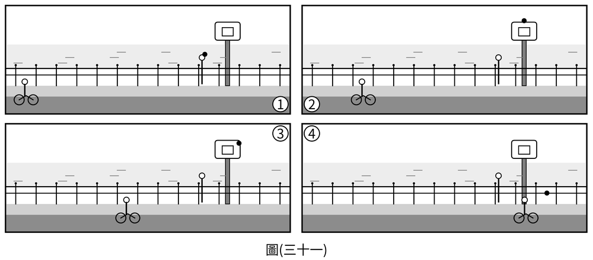
- (A) t1＞t2＞t3
- (B) t1＝t2＜t3
- (C) t1＝t2＝t3
- (D) t1＜t2＜t3
看答案與詳解
答案：(D)
照片 1→2：約前進 2 個欄杆間隔；2→3：約 3 個；3→4：約 5 個。
距離越來越大 → 時間間隔 t1＜t2＜t3 → (D)。
〔易錯〕小威的籃球不是等速度運動，不能拿來判斷時間。
一輛汽車在筆直的公路上行駛，汽車行駛的過程中，其速度與時間的關係如圖(三十五)所示。已知橫軸上各時間的間隔均相等，則關於這輛汽車在各個時間點的相對位置，下列敘述何者正確？
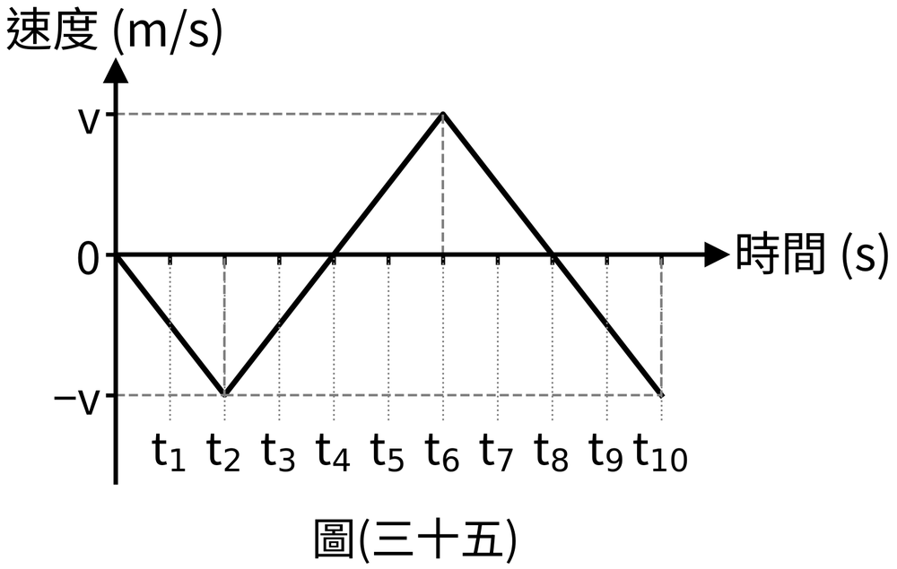
- (A) 汽車在 t2 時距離出發點最遠
- (B) 汽車在 t10 時距離出發點最遠
- (C) 汽車在 t1 與 t5 時的位置相同
- (D) 汽車在 t6 與 t10 時的位置相同
看答案與詳解
答案：(D)
0～t4：面積＝−½×4T×v＝−2vT（t4 時離出發點最遠）；t4～t8：＋2vT（t8 回到出發點）；t8～t10：−vT。
(A) ✘ t2 時位置 −vT，t4 時 −2vT 更遠。
(B) ✘ t10 時位置 −vT，不是最遠。
(C) ✘ t1 時 −¼vT，t5 時 −2vT＋¼vT＝−1.75vT，不同。
(D) ✔ t6～t8 面積＋vT，t8～t10 面積 −vT，相加為 0 → 位置相同。
甲、乙、丙、丁四車以 A 處路口為起點（原點），下一路口 B 為終點，A 至 B 是一段相當筆直的道路，且四輛車都是朝 B 直線前進，沒有倒退。此路段臨住宅區所以速限 50 km/h。如果綠燈亮起時即開始計時，並同時記錄位置、速度以及加速度繪成關係圖。從關係圖判斷，哪一輛車在此路段沒有超速？
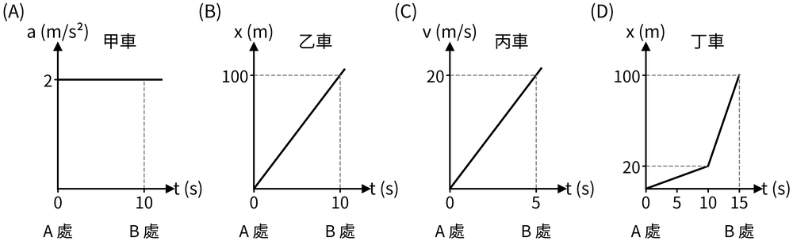
看答案與詳解
答案：(B)
(A) 甲：a＝2 m/s2 加速 10 s → 到 B 處時 v＝20 m/s（72 km/h），超速。
(B) 乙：x-t 為直線，100 m÷10 s＝10 m/s（36 km/h），沒有超速 ✔。
(C) 丙：v 最大 20 m/s（72 km/h），超速。
(D) 丁：10～15 s 內 (100−20)÷5＝16 m/s（57.6 km/h），超速。